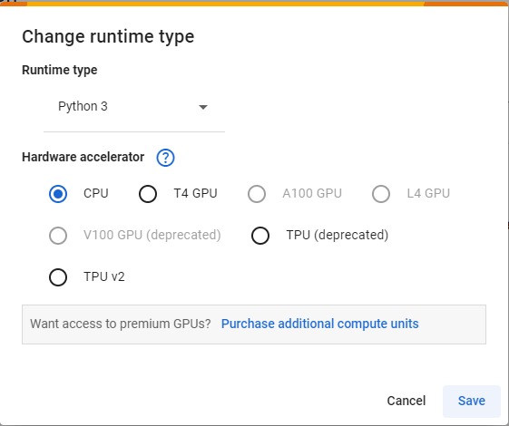
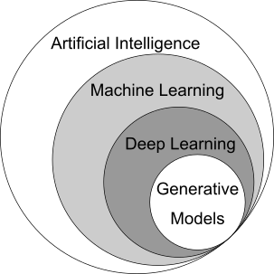
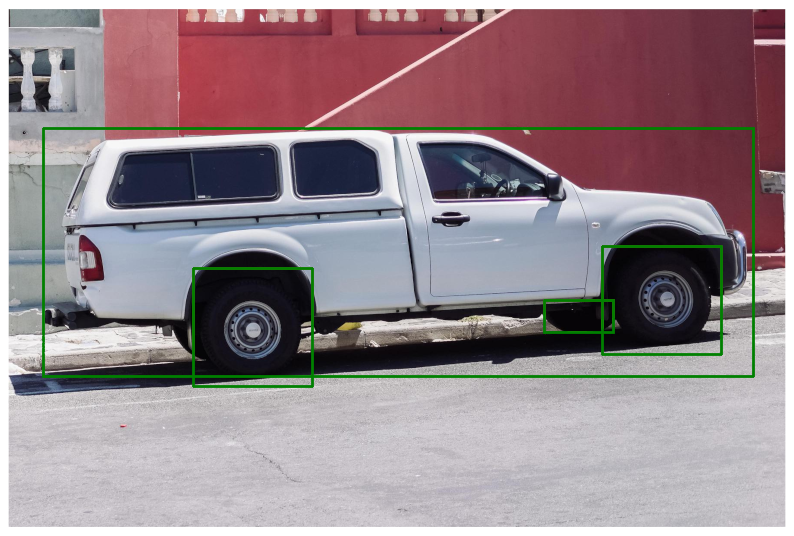
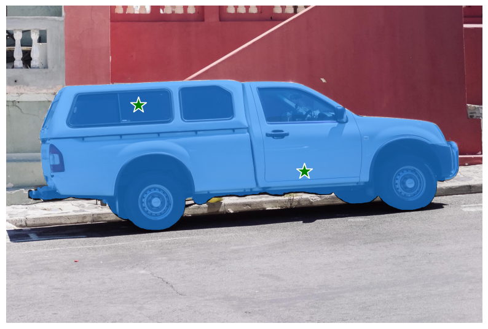

import torch
x0 = torch.Tensor([7]) # This is a point
x1 = torch.Tensor([15, 64, 123]) # This is a vector
x2 = torch.Tensor([[3, 6, 5],
[7, 9, 12],
[10, 33, 1]]) # This is a matrix
x3 = torch.Tensor([[[[1, 0, 0],
[0, 1, 0],
[0, 0, 1]],
[[2, 0, 1],
[0, 2, 3],
[4, 1, 5]]]]) # This is a tensorAdvanced Machine Learning with Python
Workshop outcomes
- Understand the process of training ML models.
- Load pre-trained ML models and fine-tune them with new data.
- Evaluate the performance of ML models.
- Adapt ML models for different tasks from pre-trained models.
0. Setup environment
Select runtime and connect
On the top right corner of the page, click the drop-down arrow to the right of the Connect button and select Change runtime type.
Make sure Python 3 runtime is selected. For this part of the workshop CPU acceleration is enough.

Now we can connect to the runtime by clicking Connect. This will create a Virtual Machine (VM) with compute resources we can use for a limited amount of time.
Caution
In free Colab accounts these resources are not guaranteed and can be taken away without notice (preemptible machines).
Data stored in this runtime will be lost if not moved into other storage when the runtime is deleted.
1. What is Machine Learning (ML)?
Machine Learning (ML)
Sub-field of Artificial Intelligence that develops methods to address tasks that require human intelligence

Artificial intelligence tasks
Common tasks
Classification
what is this?
Detection

where is something?
Segmentation

where specifically is something?
More tasks addressed in recent years
Style transference
Compression of image/video/etc…
Generation of content
Language processing
Deep Learning (DL) models
Models that construct knowledge in a hierarchical manner are considered deep models. The most common type of deep learning models are artificial neural networks.
Artifical neural networks are layered models that use the output of a layer as the input of a subsequent layer.
What determines the complexity and accuracy of neural networks to perform a certain tasks are their architecture and parameters \(\theta\).

The architecture of a neural network also help us to represent the model, implement it in a programming language, and share trained models.
A drawback of deep learning models, and artificial neural networks in general, is their lack of explainability.
However, there are recent techniques that address that problem and try to give some explanation to how a DL model made its prediction.
Examples of popular DL models in computer vision
Inception v3 for image classification 
U-Net for cell segmentation 
Train the model to learn the parameter’s values
Evaluate the model performance

Prepare our model for production
After training and evaluating our model, we can fix its parameters and have a version that behaves good enough in the task it was trained to carry out.
Some options to deliver our trained model are
- Containerize it for use in HPC (Sumner, Winter)
- Migrate it to a Cloud platform for external use
- Share the code to build the model (github), along the pre-trained parameters (bucket, drive)
\(\hat{y} = f_{\theta*}(x)\), where \(x\) is a new real-world sample
2. Intro to PyTorch
What is a tensor (PyTorch)?
A tensor is a multi-dimensional array. In PyTorch, this comes from a generalization of the notation of variables that exists on more than two dimensions.
- zero-dimensional variables are points,
- one-dimensional variables are vectors,
- two-dimensional variables are matrices,
- and three or more dimensional variables, are tensors.
Arithmetic operations are applied to each element inside the tensor
# Define a tensor of any dimension
x = torch.Tensor([[1, 3, 2], [4, 5, 7]])
x
# Define "y" as two times "x" plus fivetensor([[1., 3., 2.],
[4., 5., 7.]])The same happens with functions, e.g., trigonometric functions
# Apply a trigonometric function (e.g., sin, cos, tan) on "x"Arithmetic operations between two tensors can be applied as well
x = torch.Tensor([1, 3, 4, 7])
y = torch.Tensor([2, 5, 1, 1])Important – Check the shape of the tensors first!
r = torch.Tensor([[1, 2], [4, 5]])
s = torch.Tensor([4, 5, 10, 11, 5])
t = r + s # This will generate an error because r and s does not have the same shape--------------------------------------------------------------------------- RuntimeError Traceback (most recent call last) Cell In[5], line 4 1 r = torch.Tensor([[1, 2], [4, 5]]) 2 s = torch.Tensor([4, 5, 10, 11, 5]) ----> 4 t = r + s # This will generate an error because r and s does not have the same shape RuntimeError: The size of tensor a (2) must match the size of tensor b (5) at non-singleton dimension 1
Use the tensor’s property .shape to know the shape of that tensor
r.shapetorch.Size([2, 2])From Numpy to Torch
If you are familiar with Numpy’s arrays, you can convert them into PyTorch’s tensors as follows
import numpy as npx_np = np.array([1, 2, 3, 4])
# Define "x_pt" as a PyTorch's Tensor version of "x_np"How are tensors used in Deep Learning?
We store images in form of two-dimensional tensors for black and white, gray-scale images, and as three-dimensional tensors for color images (RGB).
import matplotlib.pyplot as plt
import skimage--------------------------------------------------------------------------- ModuleNotFoundError Traceback (most recent call last) Cell In[9], line 1 ----> 1 import matplotlib.pyplot as plt 2 import skimage File ~/.local/lib/python3.10/site-packages/matplotlib/__init__.py:161 157 from packaging.version import parse as parse_version 159 # cbook must import matplotlib only within function 160 # definitions, so it is safe to import from it here. --> 161 from . import _api, _version, cbook, _docstring, rcsetup 162 from matplotlib.cbook import sanitize_sequence 163 from matplotlib._api import MatplotlibDeprecationWarning File ~/.local/lib/python3.10/site-packages/matplotlib/rcsetup.py:28 26 from matplotlib.cbook import ls_mapper 27 from matplotlib.colors import Colormap, is_color_like ---> 28 from matplotlib._fontconfig_pattern import parse_fontconfig_pattern 29 from matplotlib._enums import JoinStyle, CapStyle 31 # Don't let the original cycler collide with our validating cycler File ~/.local/lib/python3.10/site-packages/matplotlib/_fontconfig_pattern.py:15 12 from functools import lru_cache, partial 13 import re ---> 15 from pyparsing import ( 16 Group, Optional, ParseException, Regex, StringEnd, Suppress, ZeroOrMore) 18 from matplotlib import _api 21 _family_punc = r'\\\-:,' ModuleNotFoundError: No module named 'pyparsing'
# Load some images as numpy arrays
im_bw = skimage.data.camera()
im_bw.shape--------------------------------------------------------------------------- NameError Traceback (most recent call last) Cell In[10], line 2 1 # Load some images as numpy arrays ----> 2 im_bw = skimage.data.camera() 3 im_bw.shape NameError: name 'skimage' is not defined
plt.imshow(im_bw, cmap="gray")--------------------------------------------------------------------------- NameError Traceback (most recent call last) Cell In[11], line 1 ----> 1 plt.imshow(im_bw, cmap="gray") NameError: name 'plt' is not defined
im_bw[:5, :5]--------------------------------------------------------------------------- NameError Traceback (most recent call last) Cell In[12], line 1 ----> 1 im_bw[:5, :5] NameError: name 'im_bw' is not defined
im_color = skimage.data.astronaut()
im_color.shape--------------------------------------------------------------------------- NameError Traceback (most recent call last) Cell In[13], line 1 ----> 1 im_color = skimage.data.astronaut() 2 im_color.shape NameError: name 'skimage' is not defined
plt.imshow(im_color)--------------------------------------------------------------------------- NameError Traceback (most recent call last) Cell In[14], line 1 ----> 1 plt.imshow(im_color) NameError: name 'plt' is not defined
im_color[:5, :5, :]--------------------------------------------------------------------------- NameError Traceback (most recent call last) Cell In[15], line 1 ----> 1 im_color[:5, :5, :] NameError: name 'im_color' is not defined
For convenience, PyTorch’s tensors are stored with the channels axis before the spatial (X, Y) axis. So, lets permute the axes after converting the image to a PyTorch’s tensor.
x = torch.from_numpy(im_color)
# Permute the axes of "x", so we have the color axes first, then cast the type of "x" into float type--------------------------------------------------------------------------- NameError Traceback (most recent call last) Cell In[16], line 1 ----> 1 x = torch.from_numpy(im_color) 3 # Permute the axes of "x", so we have the color axes first, then cast the type of "x" into float type NameError: name 'im_color' is not defined
print("Numpy original:", im_color.dtype)
print("PyTorch Tensor:", x.dtype)--------------------------------------------------------------------------- NameError Traceback (most recent call last) Cell In[17], line 1 ----> 1 print("Numpy original:", im_color.dtype) 2 print("PyTorch Tensor:", x.dtype) NameError: name 'im_color' is not defined
Cast the type of data from integers to floating points, so we can apply functions that return continuous variables.
# Get the mean, and standard deviation of the pixel values of "x"print("Numpy original:", im_color.dtype)
print("PyTorch Tensor:", x.dtype)--------------------------------------------------------------------------- NameError Traceback (most recent call last) Cell In[19], line 1 ----> 1 print("Numpy original:", im_color.dtype) 2 print("PyTorch Tensor:", x.dtype) NameError: name 'im_color' is not defined
Training with mini-batches of images
PyTorch can operate efficiently on multiple images at the same time. To do that, we need to stack these images into a single tensor first.
That is because operations in PyTorch expect the images to have the following axes order B,C,H,W 1. B: Batch size, 2. C: Number of Channels, 3. H: Height, and 4. W: Width
im1 = skimage.data.astronaut()
x1 = torch.from_numpy(im1).permute(2, 0, 1)
x1 = x1.float()
im2 = skimage.data.cat()
x2 = torch.from_numpy(im2).permute(2, 0, 1)
x2 = x2.float()
print(x1.shape)
print(x2.shape)--------------------------------------------------------------------------- NameError Traceback (most recent call last) Cell In[20], line 1 ----> 1 im1 = skimage.data.astronaut() 2 x1 = torch.from_numpy(im1).permute(2, 0, 1) 3 x1 = x1.float() NameError: name 'skimage' is not defined
Crop, resize, apply color transformations to images, so these are of the same shape and number of channels.
# Take a patch of size 256x256 pixels from each image
# Stack the patches into a batch of tensors at dimension 0PyTorch’s building blocks
Deep learning models are defined as hierarchical transformations arranged as layers. Each layer takes an input (the original image, or from a previous layer) and computes its output using some operations and functions. Then that output is used as input for the next layer …
Convolution layers
The most common operation in DL models for image processing are Convolution operations.

The animation shows the convolution of a 7x7 pixels input image (bottom) with a 3x3 pixels kernel (moving window), that results in a 5x5 pixels output (top).
The effect of convolution operations
kernel = torch.Tensor([[
[[0, 0, 0],
[0, 0, 0],
[0, 0, 0]], # This part of the Kernel will operate on the Red channel of the images
[[0, 0, 0],
[0, 0, 0],
[0, 0, 0]], # This part of the Kernel will operate on the Green channel of the images
[[0, -1, 0],
[-1, 5, -1],
[0, -1, 0]], # This part of the Kernel will operate on the Blue channel of the images
]])Result of the convolution between an image and the kernel
im = skimage.data.cat()
x = torch.from_numpy(im).float().permute(2, 0, 1)
# We add a "dummy" dimension to our tensor "x" so it has the BCHW axes
x = x[None, ...]
# Use the con2d function from torch.nn.functional
output = torch.nn.functional.conv2d(x, kernel, padding=0)
output.shape
plt.imshow(output[0, 0], cmap="gray")--------------------------------------------------------------------------- NameError Traceback (most recent call last) Cell In[23], line 1 ----> 1 im = skimage.data.cat() 3 x = torch.from_numpy(im).float().permute(2, 0, 1) 5 # We add a "dummy" dimension to our tensor "x" so it has the BCHW axes NameError: name 'skimage' is not defined
Experiment with different values and shapes of the kernel https://en.wikipedia.org/wiki/Kernel_(image_processing)
Convolution layers from torch.nn module
# Use the Conv2d module from torch.nn to define a learnable convolution layer
conv_1 =Cell In[24], line 2 conv_1 = ^ SyntaxError: invalid syntax
y = conv_1(x)
y.shape--------------------------------------------------------------------------- NameError Traceback (most recent call last) Cell In[25], line 1 ----> 1 y = conv_1(x) 2 y.shape NameError: name 'conv_1' is not defined
#@title Visualize the output of the randomly initialized kernel of the convolution layer
plt.imshow((y[0].detach().permute(1, 2, 0) - y[0].detach().min()) / (y[0].detach().max() - y[0].detach().min()))--------------------------------------------------------------------------- NameError Traceback (most recent call last) Cell In[26], line 2 1 #@title Visualize the output of the randomly initialized kernel of the convolution layer ----> 2 plt.imshow((y[0].detach().permute(1, 2, 0) - y[0].detach().min()) / (y[0].detach().max() - y[0].detach().min())) NameError: name 'plt' is not defined
Linear layers
These layers perform matrix-matrix, and matrix-vector operations on its corresponding inputs. Linear layers are commonly used in final layers to obtain the output of the model.
For classification tasks, these layers project a multi-channel feature map into a single prediction of the image’s class.

In object detection and localization problems, these layers generate the detection confidence and bounding box of the object.

Linear layers from torch.nn
# Use the Linear module from torch.nn to define a linear operation
lin_1 =Cell In[27], line 2 lin_1 = ^ SyntaxError: invalid syntax
Non-linear activation layers
These layers are integrated to add non-linear behavior into the neural network.
# Define a Rectified Linear Unit (ReLU) layer using the torch.nn module
relu_1 =Cell In[28], line 2 relu_1 = ^ SyntaxError: invalid syntax
A list of activation layers here https://pytorch.org/docs/stable/nn.html#non-linear-activations-weighted-sum-nonlinearity
Pooling layers
This kind of layers are used to downsample the current feature maps which helps to summarize information from large regions into a couple of pixels.
There are two common pooling operations: maximum pooling, and average pooling.
Maximum pooling looks for the maximum value in a region and returns it as a single pixel. While average pooling computes the average value for that region.
# Define a Maximum Pooling layer from torch.nn module
max_pool =3.- Review and understand the architecture of classic and recent DL models
LeNet 5 architecture
http://yann.lecun.com/exdb/publis/pdf/lecun-01a.pdf
import torch
import torch.nn as nn# Implement the layers of LeNet5Test our implementation
U-Net
Lets impelment the first operations of U-Net